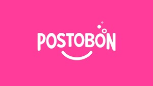
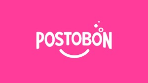
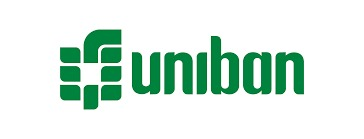
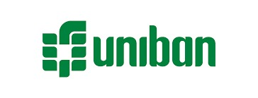

15 Octubre, 2024 / Por Royman Guao
Tabla Periódica de la Compensación
Basado en mi experiencia en el tema de compensación, quise compartirles de una forma didáctica los conceptos...
Leer Más...Ayudo a las empresas a ser más productivas atrayendo y fidelizando el mejor talento con planes de compensación efectivos.
+10 años experiencia
+150 estructuras salariales diseñadas
+50 modelos de compensación variable implementados
LLENAR FORMULARIO TRABAJEMOS JUNTOSTener procesos eficientes y que estén alineados con los objetivos estratégicos de tu empresa.
Diseñar cargos sin duplicidad de funciones y que no generen confusión de responsabilidades.
Construir estructuras que fomenten la toma de decisiones ágiles, permitiendo adaptarse de manera rápida a los cambios del mercado.
Distribuir adecuadamente las funciones en cada cargo para maximizar la productividad y prevenir la sobrecarga laboral.
Conectar a los líderes de tu empresa con políticas salariales claras y coherentes, eliminando desigualdades percibidas o reales entre los empleados.
Aplicar métodos claros y coherentes en la determinación de los salarios.(valoración de cargos, equidad y competitividad, estructuras o curvas salariales, entre otros)
Diseñar planes de carrera personalizados que fidelicen a tus empleados clave y que también impulsen su desarrollo y compromiso con la organización.
Administrar y actualizar de manera ágil los datos salariales para facilitar la toma de decisiones y ajustes necesarios.
Implementar indicadores y metodologías precisas para remunerar a tus equipos comerciales, conectando su rendimiento directamente con el cumplimiento de los objetivos de la compañía.
-
Conectar la remuneración de todos los cargos de la organización con el propósito y objetivos generales de la compañía, creando una cultura de alineación y colaboración.
Evaluar la alineación del modelo o de los modelos de remuneración variable actuales asegurando la viabilidad financiera e incentivar los resultados esperados por la compañía.
Medir la carga laboral de los empleados asegurando que exista productividad y un balance adecuado de las actividades en los distintos procesos de la estructura.
Diseñar descripciones de cargos acordes a los roles de la estructura asegurando que respondan a la realidad de los roles permitiendo generar eficiencias en los procesos que se nutren de este insumo.
Automatizar procesos existentes a través de herramientas diseñadas en microsoft excel y power BI.
Basado en mi experiencia en el tema de compensación, quise compartirles de una forma didáctica los conceptos...
Leer Más...En casi todas las empresas del mundo no ven con buenos ojos si un empleado asiste a una entrevista...
Leer Más...No solo las estructuras organizacionales deben ser ambidiestras, las politicas de compensacion tambien...
Leer Más...Valorar adecuadamente los cargos dentro de una empresa es fundamental para asegurar una estructura salarial eficiente...
Leer Más...Asegurar que un modelo de comisiones sea viable financieramente para la empresa es esencial para evitar desequilibrios financieros y garantizar la...
Leer Más...En momentos desafiantes, la gestión del talento se convierte en un elemento clave para la adaptación organizacional. Partiendo de mi conocimiento, experiencia y del...
Leer Más...Ingeniero Industrial graduado de la Universidad Nacional de Colombia con más de 8 años de éxito en la implementación de proyectos estratégicos. Especializado en el diseño e implementación de esquemas de compensación fijos y variables bajo criterios de equidad interna y competitividad en el mercado, así como en diseño organizacional y mejoramiento continuo de los procesos. Mi enfoque se centra en crear ambientes organizacionales propicios que potencien el desarrollo, atracción y fidelización del talento humano aumentando la productividad de las personas y por ende de la organización. Líder colaborativo, empático y orientado al logro, comprometido con la construcción de equipos de alto rendimiento.
He liderado con éxito la implementación de más de 150 soluciones de alta calidad en materia de compensación y diseño organizacional logrando alta satisfacción en los distintos grupos de interés en organizaciones como: Postobon, Heinekeen, Comfenalco, Industrias Haceb, Cueros Vélez, New Stetic, Metro de Medellín, Zeuss Combustibles, Brinsa, Iluma, Pactia, ISA, Botero Soto, Conconcreto, Duratex, entre otras.
Mis áreas de especialización son: Diseño e implementación de estrategias de compensación: Remuneración fija, variable y beneficios, Diseño Organizacional Estratégico, Valoración de cargos, Gerencia de proyectos, Mejora de procesos, Estudio de métodos de trabajo, entre otras.

Si deseas mayor información del cómo puedo acompañar a tu organización en los distintos desafíos, contáctame al teléfono o al correo electrónico. También puedes llenar el formulario y me comunicaré contigo.
Antioquia, Medellín
Envíame tu consulta por correo electrónico


 

 
